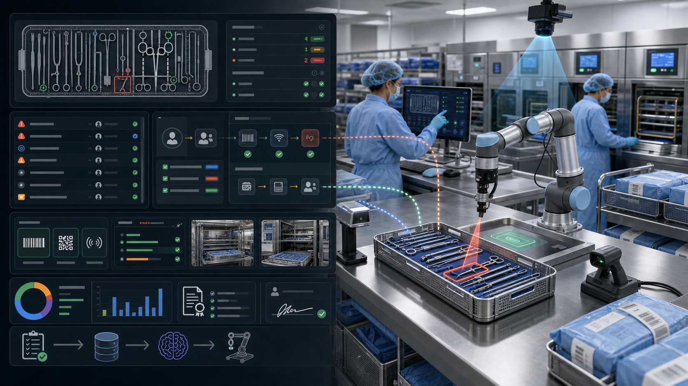

延误发生在最贵的地方
器械错误常常到开台前才暴露，巡回护士、外科医生、CSSD 和供应商开始打电话、找替代、等补包。
01 · Problem
真正让 OR、CSSD、供应链和质控一起着急的，不是系统里没有一条记录，而是手术准备被某个异常卡住时，没人能立刻回答：谁负责、怎么补救、证据在哪里、能不能上台。
器械错误常常到开台前才暴露，巡回护士、外科医生、CSSD 和供应商开始打电话、找替代、等补包。
托盘复杂、器械相似、金属反光、班次紧，缺件、错件、损坏候选和污物候选都压在人眼上。
条码/RFID 可以告诉你资产在哪里，但不能自动证明周期证据齐全、替代件合规、护士和技师已经确认。
事件上报常常不完整且滞后，无法支撑实时分派、根因复盘、召回闭环和跨班次培训。
02 · Why Now
2026 年的机会不是从零教育医院“要不要数字化 CSSD”。预算、痛点和标准已经存在。真正的新入口，是把视觉终检、周期证据、UDI/RFID、人工签核和边缘 AI 组织成一个能在 90 天内证明 OR 容量回收的产品。
03 · Insight
追踪系统回答 where，SterileLoop 回答 closed or not。医院不会先为“机器人自动临床放行”买单，但会为更少 OR 等待、更少找器械电话、更完整 CSSD 追溯、更快召回、更少重洗返工和更可信审计付费。
不再只盯“这把器械在哪里”，而是把缺件、错件、损坏、过期、周期缺证和外来包迟到变成待关闭对象。
关闭必须包含责任人、替代件、扫码/RFID、清洗/灭菌周期证据、照片、人工签核和时间戳。
每次低置信度、人工纠错、错检和替代决策都进入 LeRobot HIL 与视觉数据闭环。
04 · Solution
它不替代 Censis、STERIS SPM、新华医疗、老肯、HIS 或手麻系统。它插在现有流程之上，把“这盘看起来有问题”变成“已分派、已纠正、已补证、已签核、可审计”。

05 · Product Workflow
这不是全院大替换，也不是医疗器械自动放行系统。第一版只做辅助终检、证据汇聚、异常分派、人工签核和审计包。
扫描托盘条码，加载模板、病例时间、医生偏好、外来器械、关键件和版本哈希。
固定顶视/侧视相机识别槽位、器械类别、缺件、错件、多件、遮挡和低置信度区域。
把视觉结果与 UDI/DataMatrix、RFID、清洗批次、灭菌批次、BI/CI 和人工备注对齐。
异常按开台时间、严重度、替代路径和责任人进入 CSSD、OR、供应商或质控队列。
技师/护士人工签核，系统输出照片、扫码、周期、模型版本、HIL 片段和关闭时间。
06 · Market Wedge
第一批试点不是全院替换，而是一个高风险托盘族、一个手术线或一个外来器械流程，在 90 天内证明延误分钟、重洗返工、缺件老化和审计缺证下降。
器械多、外来包多、相似件多、手术分钟贵，是高价值试点入口。
关键件缺失和替代方案确认需要更早、更可信的闭环证据。
器械、附件、能量设备和专用托盘复杂，适合模板化视觉终检。
供应商到货、清洗、灭菌、放行、召回和归还链路容易产生跨组织异常。
手术量大、DRG/DIP 压力强，WS/T 879-2025 和 UDI 扩围让 CSSD 数据合规进入预算语言。
第三方/区域消供中心需要证明回收、清洗、灭菌、发放、不合格反馈和跨院召回闭环。
07 · Business Model
商业模型按器械相关延误分钟、取消/推迟手术、缺件替换、重洗返工、审计人工和加班成本证明价值，再转换成付费试点、站点订阅和硬件包。
25k-75k 美元或 20-60 万元，覆盖一个院区、4-8 间 OR 或一个高风险服务线。
75k-250k 美元/院区量级，按 OR 数、CSSD 站点、托盘量、终检工位和集成模块扩展。
Qualcomm edge node、相机、扫码/RFID、光源、工位治具和安全桌面机器人作为年度维护硬件包。
给 Value Analysis Committee 一页 ROI：延误分钟、取消手术、替换支出、返工和人工节省。
08 · Go-To-Market
用 2 周基线和 8-10 周 active pilot 跑一个高风险服务线。保守用 46 美元/分钟，医院认可可计费机会时，用 153 美元/分钟做上行情景。
记录每 100 台病例的器械异常、缺件、错件、重洗、IUSS、OR 等待、找器械电话和文档完整率。
部署一个边缘终检工位，接入托盘模板、扫码/RFID、周期记录和 OR 时间表。
器械相关延误分钟下降 20%+，95%+ 阻塞异常当天关闭，95%+ 异常 15 分钟内分派责任人。
赢下一个托盘族后，扩到外来器械、召回、供应商 SLA、院区 CSSD 和区域消供中心。
09 · Competition
Censis、STERIS SPM、Aesculap/Ascendco、ReadySet、Scalpel AI、新华医疗、老肯和第三方 CSSD 都证明市场在动。SterileLoop 不做 rip-and-replace，而是做能接入这些系统的 edge visual QA + exception closure layer。
Censis、STERIS、Aesculap 擅长 SPD 流程、资产追踪和报表；SterileLoop 聚焦终检异常是否关闭。
ReadySet 强在外来器械、供应商和 bill-only 协同；SterileLoop 把外来包接到托盘终检和周期证据。
Scalpel AI 等验证了视觉托盘检查；SterileLoop 的差异是 OR/CSSD/VAC 共同认可的关闭证据和 ROI。
10 · Moat
每次缺件、错件、替代、重洗、召回、外来器械延误、人工纠错和签核结果都会变成下一次更早预警、更准分配、更快关闭的监督信号。
托盘模板、器械身份、病例时间、医生偏好、外来包、周期记录、替代路径和 OR 时间形成图谱。
视觉帧、扫码/RFID、设备周期、人工纠错、机器人指引、替代件和签核结果形成稀缺训练数据。
WS 310、T/WSJD 39、WS/T 879、UDI、FHIR Device、HIS、手麻、HRP 和院感接口形成流程壁垒。
反光金属器械、多相机、弱网、本地隐私、QNN/QAIRT 和 HIL 数据让站点越跑越稳。
11 · Architecture
中国版默认院内或中国私有云；海外版默认海外云。原始托盘图像、病例关联、人员记录和设备周期数据不跨区流动，模型 artifact 经过 AI Hub / QNN / QAIRT profile 后再部署到边缘。
固定 RGB/RGB-D、侧摄像头、偏振/漫射光源、扫码枪、RFID mat、托盘条码和设备周期网关。
RB3 Gen 2 / QCS6490 / Dragonwing 运行 QNN/QAIRT 检测、槽位配准、计数和低置信度队列。
observed_item、identifier_scan、process_cycle、exception、closure_action 和 evidence_packet 对齐。
SO-101 或桌面机械臂只做非接触指引/演示，人工接管和纠错进入 LeRobotDataset。
输出照片、UDI/RFID、周期引用、操作者、模型版本、设备 ID、签核和哈希化审计包。
12 · Competition Demo
安全 demo 使用退役/泡沫/塑料 mock 器械、托盘模板、条码/RFID、模拟清洗灭菌周期和桌面机械臂，只展示辅助终检与证据闭环。
扫描 mock 托盘条码，系统加载 Ortho Minor Tray 模板和预期器械。
移走一个 forceps、加入错夹、遮住一个 DataMatrix，edge vision 标出缺件/错件/读码失败。
机械臂用塑料指针慢速指向异常槽位，不接触临床器械，人类可随时暂停接管。
操作员扫码替代件，RFID mat 确认存在，模拟灭菌网关发送 cycle pass。
技师签核后导出照片、扫码、周期引用、HIL 片段、模型版本、设备 ID 和关闭时间证据包。
13 · Why Qualcomm
医院不希望把托盘图像、手术计划、人员行为和设备周期默认上公网云。Qualcomm 的多相机边缘 AI、低功耗计算、设备身份、安全和 AI Hub / QNN / QAIRT 部署路径，正适合这种弱网、本地、可审计的工作站。
反光器械、固定光照、多相机、低置信度和人机协同需要在本地实时响应。
中国医院数据本地化和海外医院隐私要求都需要院内边缘节点与区域训练。
比赛可展示训练、compile/profile、QNN/QAIRT artifact、边缘运行和回滚证据。
把 Qualcomm 机器人能力带入院内运营、CSSD、器械供应、机器人物流、区域消供和智慧医院生态。
14 · Ask
目标是展示 Qualcomm edge AI 识别托盘异常，LeRobot HIL 记录人工纠错，系统用扫码/RFID/周期证据和人工签核关闭异常，同时明确不证明无菌、不自动临床放行。
RB3 Gen 2 / RB6 / Dragonwing dev kit，固定相机、光源、扫码枪、RFID mat 和桌面机械臂。
泡沫/塑料器械、托盘模板、条码/UDI mock 标签、清洗/灭菌周期模拟器和异常盒。
匿名托盘模板、器械清单、异常类型、替代规则、周期字段和审计字段样例。
2-3 位 CSSD、OR 护理、院感/质控顾问，帮助把 demo 语言控制在真实医院边界内。
Claims To Avoid
不声称证明无菌，不自动放行手术托盘，不替代 CSSD 技师或 OR 护士清点，不承诺视觉唯一识别每把真实器械，不检测微生物、所有污染、锋利度或微观损伤，不声称 FDA/AAMI/医院生产就绪，不声称 RFID/DataMatrix 永远可读。